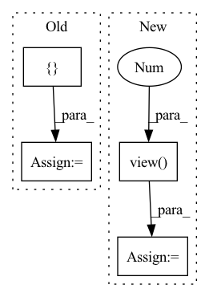

Pattern ID :1231
Before Change
stop = torch.sigmoid(stop)
// Store predictions
mel_outputs += [ outputAfter Change
// Project to mel
// (B, mel_dim*r) -> (B, r, mel_dim)
output = self.mel_proj(proj_input)
output = output.view( B, -1 , self.mel_dim)
// Stop token prediction
stop = self.stop_proj(proj_input)
stop = torch.sigmoid(stop)In pattern: SUPERPATTERN
Frequency: 3
Non-data size: 4
Instances Fragment ID: 3674298
Project Name: thuhcsi/tacotron
Commit Name: fea9ec535ec373aad564646f4f292fbee0217c29
Time: 2021-03-18
Author: johnson.tsing@gmail.com
File Name: model/tacotron2.py
M Class Name: Decoder
N Class Name: Decoder
M Method Name: forward(4)
N Method Name: forward(4)
M Parent Class: nn.Module
N Parent Class: nn.Module
M File Name: model/tacotron2.py
N File Name: model/tacotron2.py
M Start Line: 127
M End Line: 224
N Start Line: 127
N End Line: 216
Before Change
// Store predictions
mel_outputs += [output]
attn_scores += [ attention_scoreAfter Change
// Project to mel
// (B, mel_dim*r) -> (B, r, mel_dim)
output = self.mel_proj(proj_input)
output = output.view( B, -1 , self.mel_dim)
// Stop token prediction
stop = self.stop_proj(proj_input)
stop = torch.sigmoid(stop) Fragment ID: 3674299
Project Name: thuhcsi/tacotron
Commit Name: fea9ec535ec373aad564646f4f292fbee0217c29
Time: 2021-03-18
Author: johnson.tsing@gmail.com
File Name: model/tacotron.py
M Class Name: Decoder
N Class Name: Decoder
M Method Name: forward(4)
N Method Name: forward(4)
M Parent Class: nn.Module
N Parent Class: nn.Module
M File Name: model/tacotron.py
N File Name: model/tacotron.py
M Start Line: 87
M End Line: 187
N Start Line: 88
N End Line: 180
Before Change
for i in range(target.shape[1]):
if i != self.ignore_index:
dice_loss, _ = dice(predict[:, i], { "targets": target[:, i]} , device)
if self.weight is not None:
assert self.weight.shape[0] == target.shape[1], \
"Expect weight shape [{}], get[{}]".format(target.shape[1], self.weight.shape[0])After Change
inputs = F.softmax(predict, dim=1)
//flatten label and prediction tensors
inputs = inputs.view(-1 )
targets = targets.view(-1)
intersection = (inputs * targets).sum()
dice = (2.*intersection + self.eps)/(inputs.sum() + targets.sum() + self.eps)
loss = 1 - dice
Fragment ID: 3674291
Project Name: kaylode/theseus
Commit Name: 4e1fe493ae162a9f96ed6d7fe175133bce081fae
Time: 2022-02-19
Author: pmkhoi@selab.hcmus.edu.vn
File Name: theseus/segmentation/losses/dice_loss.py
M Class Name: DiceLoss
N Class Name: DiceLoss
M Method Name: forward(4)
N Method Name: forward(4)
M Parent Class: nn.Module
N Parent Class: nn.Module
M File Name: theseus/segmentation/losses/dice_loss.py
N File Name: theseus/segmentation/losses/dice_loss.py
M Start Line: 68
M End Line: 84
N Start Line: 12
N End Line: 23